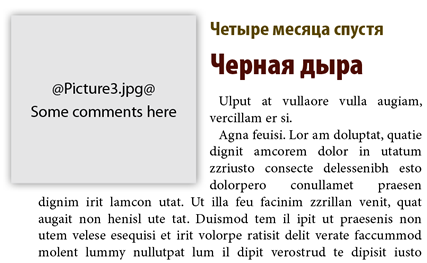
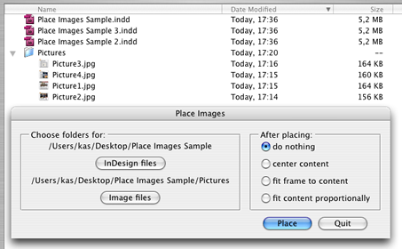
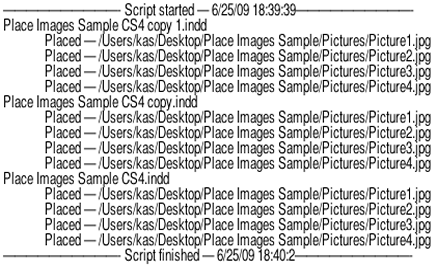

Place images
Script for InDesign CS3 and CS4 version 1.
This script replaces text frames containing file names of images with actual images.
Before

After
A file name should be delimited with @ signs e.g. @picture.tif@. A text frame may contain an additional text, for example comments — but no more than 100 characters — this is a preventive measure, as all text will disappear after placing an image so that not to destroy main part of the text.
To illustrate how the script works I´ve included a sample files (about 3 Mb).
- Download and unzip PlaceImagesSample.zip. If you are on CS4, open Place Images Sample.indd file and resave it in CS4 format (the script throws an error while trying to save a file converted from CS3 to CS4 format).
- Duplicate Place Images Sample.indd file several times
- Double click Place Images.jsx script
- A dialog will open. Select the folder where the InDesign files are located. Select the “Pictures” folder containing the images. Select an option for fitting images: do nothing, center content, fit frame to content or fit content proportionally.

- Press Place. The script will batch process all InDesign files in the selected folder and its subfolders.
Before opening a file, its backup copy will be created with the same name and “_backup” suffix. If an image is not found in the folder selected for images, the script will look for it in all subfolders. Finally, the script will create a report on the desktop: a text file called Place Images Report.txt in which you can see which images were placed and which not. Next time you run the script, it will remember the settings chosen in the previous session.

If you found my scripts useful and want me to develop more free scripts, consider supporting me by donating via PayPal directly to my e-mail: askoldich [at] yahoo [dot] com. (Due to PayPal's restrictions for Ukraine, I can't have a Donate button on my site.)
Click here to download.
See also similar scripts: